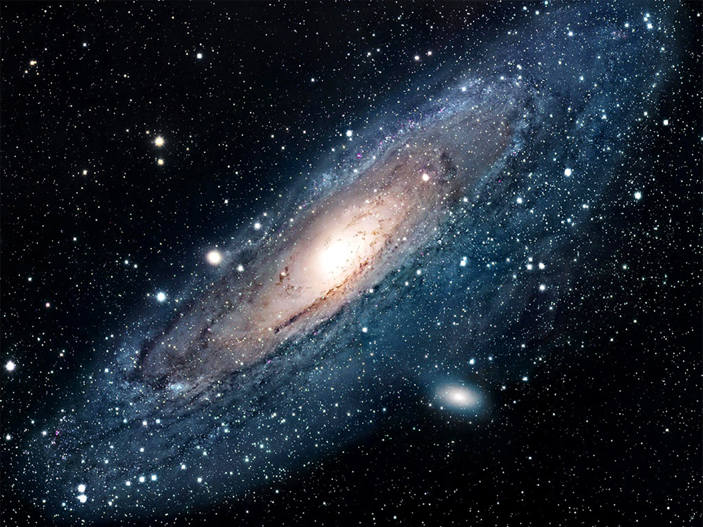

A little
Something
about  Something
To find out Ceres, Makemake ,Pluto and Eris go to the last page about planets
What am I talking about?
A Solar System is where there is one sun that has a number of sphere like objects called planets orbiting it. Orbiting/orbit means one or more objects spinning around a main object. In this case, the main object is the sun and the orbiters are the planets. But then, even the planets have things orbiting them! These objects are smaller than the planet and are called moons. Unlike a sun or a planet, moons do not have things orbiting them. Sometimes, millions and millions of years ago, when the Solar system was being formed, large space rocks called Asteroids got caught up in a planet’s gravitational pull and became it’s moon or one of it’s moons. Gravity is what keeps you and me and everything on Earth on the ground. This is the planet’s gravity. That means that gravitational pull is simply the gravity’s pull. Self explanatory. As well, the word atmosphere might be mentioned in this book a lot. Most planets have their own atmosphere. An atmosphere is a layer of gases on top of the planet that when things like small space objects blaze through it, they burn up. Earth has one moon. Funnily enough, called the Moon. The most common types of planets you should know are ordinary planets like Earth, Mercury, Venus and Mars. The rest, Jupiter, Saturn, Uranus and Neptune are what we call Gas Giants, also called Jovian Planets. Pluto is a planet and is no longer part of the main nine planets we know because it is what we call a dwarf planet and now there are eight. But, don’t think that these are the only planets in our wondrous solar system.
What we call a galaxy, has millions and even billions of Solar Systems. And guess what? There’s something even bigger, a Universe! A universe is made up of millions and billions of galaxies!
A galaxy called the Andromeda Galaxy is on a crash collision course the Milky Way and in a few billion years, they will collide.
world
out amazing we
Find in………………
more about this live
Our Galaxy is called the Milky Way. We live on the planet Earth which is the third closest planet the the sun. The order of the planets closest to our sun are in the image above. Pluto, is not shown in this image but is still a planet. It is what we call a dwarf planet and is located in the Kuiper Belt and is the biggest object there. These aren’t the only planets in the Milky Way. There are other dwarf planets including Eris, which is also in the Kuiper Belt. Gas giants (sometimes known as Jovian Planets) like Jupiter, Saturn, Uranus and Neptune (in the picture above). The Sun, is a star and is at the center of our solar system. Stars are giant balls made up of gas that provide heat to the orbiting planets and moons. The further away the moon or planet is, the less heat it gets and will be layered with ice.
THE SUN
The sun (star) is a giant ball of gas that releases heat to it’s orbiting planets. The Sun is 4.57 billion years old and is in the center of our solar system. The category of the sizes are a yellow dwarf (our sun’s size), Blue-White Star(seven times bigger than our sun),Red Giant (thirty times bigger than our sun) and a Super Giant (hundreds of times bigger than our sun. The further away the planets are, the less heat it gets meaning it’s temperature is a lot colder and may have a layer of ice on it. Mercury is the closest planet to the Sun meaning that its temperature is more than boiling but it can still be very cold at night. The temperature of the Sun can be 5,778 degrees celsius and the core is 15 million degrees celsius .
Every now and then, black spots appear on the sun. These are called Sun Spots. Sun Spots mark where the cooler patches on the Sun are. These patches can be a few kilometers long or can be 100,000 kilometers long! The temperature is normally around 1,500 degrees celsius and can even be 3,800 degrees celsius. That is pretty cool for the sun, but not ideal for Earth.
The sun constantly emits streams of electrically charged particles into space and can have Solar Flares. A Solar Flare is a large energy release from the Sun that if close enough to Earth, can cut power off for an amount of time.
Magnetic fields drive Solar activity. Particles from the sun can reach up to the Heliosphere which is a limit of the sun’s reach.
Every 11 years, the Sun flips it’s poles. It is a gradual process and the two poles may not flip at the same time. It causes more solar flares and solar storms. The Earth flips it’s poles much slower, every 50,000 years to 100,000 years but is still a similar process.
A Solar eclipse occurs when the moon gets to a position where it is directly in front of the sun and in a particular area it will be in total darkness. This can last up to 7 ½ minutes.
As a sun gets older, it appears to have a more redish colour to it and expands to a Red Giant or a Super Giant. The temperature rises and the closest planets burn up. When the biggest stars die, it creates an explosion called a supernova and the only thing that is left is the core. When the biggest stars explode as supernovas, their cores collapse in on themselves under gravity to become black holes. These areas have so much gravity that not even light can escape. That is why they have a black dot in the center of them. The core loses most of it’s gravitational pull and the remaining planets drift off into space. When our Sun expands and heat rises, it would be Mercury, Venus, Earth and possibly Mars that will burn up as the remaining planets drift off.
Inside the sun Total Eclipse
 How a Solar Eclipse Works
How a Solar Eclipse Works
 A Black hole may look similar to this
A Black hole may look similar to this
Asteroids,Comets Meteorites & Meteors
Asteroids are minor planets that can sometimes have things orbiting them like ordinary planets. A lot of asteroids belong in the Kuiper Belt or the Asteroid Belt. The Kuiper Belt is in a region from Neptune to far beyond Pluto and objects have been found there since 1992. But, even at the edge of the Solar System, lies collection of comets called the Oort Cloud.
A large number asteroids orbit our sun in an area known as the Asteroid Belt. The boundaries of the Asteroid Belt are between Mars and Jupiter with a width of 180 million kilometers.
Near Earth Asteroids (NEAs) are asteroids that are reasonably close to Earth, but have no harm to us. The closest asteroid to pass Earth was Eros which was 22 million kilometres away from Earth.
Every day, small space rocks fall down upon Earth and reach the ground as meteorites. A lot of meteorites are made of rock and are called stones. Others are iron and are called iron. Meteorites are very small but occasionally larger ones hit our planet that may be dozens or possibly even hundreds of yards long and hit Earth either burning up a little or whole while entering Earth’s atmosphere or leaving large craters in the ground.
Comets are icy objects left over from the birth of our solar system and look like a bright light when seen at night with a naked eye. Though they are tiny, they release a blue-ish cloud of gas and dust the more closer to the sun. The cloud creates the head of the comet which is the most visible part. The tail that also gets created is often millions of miles long. When Earth passes through the dust of previous comets or in a comet’s orbit it causes us to see meteor showers.
On a clear night sky, you may see little streaks of light in the sky which are sometimes referred as ‘shooting stars’ or ‘falling stars’. But the streaks have a proper name, Meteors. These Meteors are caused by little rocky specks charging through the atmosphere towards Earth. Friction with the air makes them so hot that they burn up into dust. Did you know that as much as 200 tons of meteor dust falls on Earth every single day?
MERCURY Symbol for Mercury
Mercury is the closest planet to the sun. As a result, as average temperature in the daytime is 427 degrees celsius but since it has almost no atmosphere to keep the heat in, it ranges to -170 degrees celsius at night! It is a very rocky planet and it’s surface is covered in craters which makes it look like the moon in particular places. These craters were made when the planet was bombarded with meteorites long ago.
Mercury’s Crater Covered Surface
The craters on Mercury cover the almost the entire planet. The reason the asteroids didn’t burn as it entered Mercury’s atmosphere is because Mercury doesn't have much atmosphere. The craters are mostly shallower than on the moon and vary in size from a few yards to a few hundred kilometers across! In between, there are relatively smooth lava-covered plains crossed by cliffs and ridges. Did you know that the Caloris Basin, also called the Caloris Planitia, is 1,300 kilometers across? It was created when a space rock 100 kilometers crashed on the planet.
Mercury God
All of the nine/eight planets are all named after Roman Gods. Mercury is named after the Roman God, Mercury the wing messenger.
Did You know?
*Beethoven is the largest crater on the Mercurian surface and is 640 kilometers across
*If you have ever seen a small dot go across the sun, you’re probably not the only person. Twice a decade, you can see Mercury pass the sun as a black dot. This is called a transit. (Different from sunspots)
*When Mercury and Earth reach their closest approach, the average distance is around 77 million km
*Mercury is 1404 kilometers in diameter across the equator bigger than our moon

Venus
Venus is only a little bit smaller than Earth and is the 2nd closest planet to the sun. It is made up of rock and has a thick atmosphere. The temperatures are hotter than an oven. Venus finishes it’s orbit in 225 Earth days but turns slowly, taking 243 Earth days to rotate once. As a result, Venus’s day is longer than it’s year.
A Cloudy Atmosphere
Just as much asteroids hit Venus as Mercury but because of it’s atmosphere, all the objects burn up and do not leave as many craters. It is mostly made of Carbon Dioxide and it’s pressure is extreme. That is why rovers that land on Venus only last a few hours. The dense clouds in the thick atmosphere are made up of sulfuric acid droplets. The atmosphere traps heat in like a greenhouse, unlike Mercury, causing temperatures up and over 475 degrees celsius. As the temperature is very hot metal would only exist as a liquid.
Volcanic Landscape
Maat Mons is one of the largest volcanoes on the Venusian surface. It is 200 kilometers across and rises 9 kilometers in height. Though probably extinct, it has erupted repeatedly in the past, ejecting vast quantities of runny lava that formed the local volcanic plains.
Sky Watcher
Venus can be the brightest light you see in the sky depending on what hemisphere you live in. It looks like a very bright star and the best time to see it is evening because the other stars and planets don’t come out until complete darkness.
Venus God
Venus is named after the Venus goddess; The Goddess of Love.
|
Earth
Earth is our home planet and the third planet from the sun. It is the only inhabited planet we know. This is because it suits our nature by providing air that we can breath, the perfect amount of warmth from the sun so we don’t freeze or cook and suitable food and water so we don’t starve or dehydrate. That makes our planet unique in our solar system. The main material Earth is made of is rock. At the center is a large core of iron, partly molten. Movement in the core give Earth a strong magnetic field, which stretches into space and forming a bubble called the magnetosphere.
Discovery and Research
Earth may be the planet we live on, but that doesn’t mean that there is nothing to explore. From the Big Bang, to a crowded city, there is still lots to explore.
People called scientists are people who do research about the planet and learn about things that we invent and even discover new things about our everyday lives. The Big Bang is an event that a number of scientists believed formed our universe. It is said to have occurred about 13.7 billion years ago. In an instant, building blocks and matter was formed and time began. From then, our universe began to expand and is still expanding today. Over billions of years, the matter formed into large, complex structures such as planets, moons and space rocks.
230 million years
Big Bang Time begins ago first dinosaurs
Objects grew and evolved
Natural and Man-made
Natural structures are created when an event that alters its surrounding area and forms a new object or structure. This includes craters being formed when asteroids hit a planet and have an impact of the land, creating a circle in the ground with depth. Man made objects are simply made by human. This includes cities and even carvings, statues and monuments. Some famous man made objects are the Statue of Liberty and even the Great Pyramids of Geyser in Egypt-made hundreds of years ago! Objects, man made or natural, can be formed anywhere at any time.
Natural Disasters
Natural disasters are major floods, storms, drought, bushfires, grass fires, cyclones a tsunami and more. These natural disasters create major destruction through it’s path. One example is the Great Barrier Reef. As well as pollution, cyclones tear up its area.
Seasons
The Earth is on a tilt as it is orbiting our sun. This causes seasons. We have four seasons- Winter, Autumn, Summer and Spring. This is an event that will just repeat itself in this order. Though, on the other side of the planet, it is the opposite way around. If in Australia it is Winter, then in the U.S.A, it would be Summer. The Earths tilt affects a heap of things to days to seasons. It affects preparation for animals meaning that it has to gather food so when it is more dry they have still plenty of food.